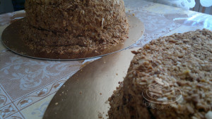

Торт Наполеон – Рецепт от Натали
Сколько всего уже написано в Интернете о торте Наполеон: и статьи и фото и видео, но интерес к данному десерту никогда не утихнет, ведь это один из самых любимых домашних тортов в мире (или это мои фантазии ). Короче я тоже решила описать свой торт Наполеон, рецепт которого я также узнала из сети. Правда, он у меня получился не сразу и были моменты, о которых нигде не пишут. В этой статейке я поделюсь своими наблюдениями и опишу рецепт торта Наполеон в моем исполнении.
Торт Наполеон — особенности

Так как торт популярен во всем мире, существует множество разных рецептов как теста так и крема для Наполеона. Здесь все зависит от индивидуальных предпочтений, ведь часто бывает, что купил тортик и он такой вкусненький, что уже не задумываешься о фигуре и наливаешь вторую чашку чая. А бывает, только ложки хватает, чтоб понять, что что-то не то. И дело не в свежести.
Честно говоря, моему мужу все мои эксперименты нравятся… по крайней мере он так говорит , но я понимаю, что не всегда все удавалось. В результате методом некоторых проб и ошибок я пришла к тому, что чтобы сделать идеальный торт Наполеон, рецепт теста и метод выпекания коржей играют ключевую роль. Я стараюсь выпекать коржи очень тонко. Для этого раскатываю тесто толщиной около 1 мм. Тогда они получаются идеально хрустящие. На торт Наполеон весом 2 кг необходимо 15 тончайших коржей.
Торт Наполеон – рецепт теста
Состав (ингредиенты):

- Мука — 600-650 г,
- Сливочное масло — 350 г,
- Яйца — 2 штуки,
- Холодная вода — 125 мл,
- Соль — 2 г.
Инструкция:
- На стол высыпаем просеянную муку, солим её, добавляем холодное сливочное масло и начинаем быстро рубить длинным ножом до мелкой крошки.
- Слегка взбиваем яйца и добавляем к ним воду.
- В масляно-мучной смеси посередине делаем кратер и частями добавляем яйца. Быстро замешиваем эластичное тесто.
- Разделяем тесто на 15 частей, накрываем пищевой пленкой и отправляем в холодильник на 2-4 часа, можно и на ночь. Если времени мало, отправляем на 15-30 минут в морозилку.
- Разогреваем духовку до 180℃.
- На подпыленном мукой столе или пергаменте тонко раскатываем тесто, обрезаем по трафарету, накалываем вилкой и отправляем в духовку.
- Выпекаем каждый корж 10-15 минут до золотистого цвета.
Торт Наполеон — советы от Натали по тесту
Ну и, собственно, вот мои советы из личного опыта, как должен быть описан для торта Наполеон рецепт. При работе с тестом обратите внимание на следующее:
- Тесто нужно месить очень быстро, и если не учитывать пропорции продуктов, то работать с тестом далее будет тяжело.
- Тесто нужно раскатывать очень очень тонко. Если его неправильно замесить, то очень много сил и времени нужно будет потратить, чтобы толщина коржа была достаточно тонкой.
- Все время следите за коржами в духовке! Так как они очень тонкие, нужно углядеть золотую середину их готовности. Если коржи достать немного раньше, вкус торта получается не такой хрустящий и ароматный и есть ощущение, что ешь сырое тесто. Но если передержать корж хотя бы на 1-2 минуты он становится пересушенным или вообще подгорает. В результате ваш торт Наполеон получит горьковатый привкус.
Торт наполеон – рецепт крема
На втором месте по важности конечно же крем. Когда готовы коржи для торта Наполеон, рецепт крема можно выбрать в зависимости от ваших предпочтений.
Многие не знают, но торт Наполеон бывает двух типов в зависимости от крема: «мокрый» и «сухой». И тот и другой Наполеон рецепты кремов имеют также варианты. Далее я постараюсь описать каждый в отдельности.
«Мокрый» торт Наполеон мне нравится больше, чем “сухой”. Для него я готовлю заварной крем или перемазываю сырым сгущеным молоком. И так поехали!
Торт Наполеон рецепт классического заварного крема
Ингредиенты:

- Молоко — 1 л,
- Сахар — 200 г,
- Яйца — 4 штуки,
- Мука — 3-4 столовых ложки,
- Ванильный сахар — 1 пакетик (10 г).
Инструкция:
- Молоко выливаем в кастрюлю, добавляем ванильный сахар и ставим на медленный огонь разогреваться.
- Взбиваем яйца сахаром и добавляем муку.
- Половину молока вливаем в яйца и быстро перемешиваем, получившуюся смесь переливаем обратно в кастрюлю и продолжаем варить на медленном огне до загустения, постоянно помешивая.
Торт Наполеон рецепт заварного крема со сгущенным молоком
Ингредиенты:
- Молоко — 1 л,
- Сахар — 150 г,
- Яйца — 4 штуки,
- Мука — 2-3 столовых ложки,
- Ванильный сахар — 1 пакетик (10 г),
- Сырое сгущенное молоко — 1 банка (400 г).
Инструкция:
- Молоко выливаем в кастрюлю, добавляем ванильный сахар и ставим на медленный огонь разогреваться.
- Взбиваем яйца сахаром и добавляем муку.
- Половину молока вливаем в яйца и быстро перемешиваем, получившуюся смесь переливаем обратно в кастрюлю и продолжаем варить на медленном огне до загустения, постоянно помешивая.
- В холодный заварной крем добавляем сгущенное молоко и хорошо все перемешиваем.
Для «сухого» торта Наполеон готовят масляный крем. Но мне больше нравится масляный крем с добавлением заварного. Любителям более сладкого варианта придется по душе масляный крем с добавлением сгущенного молока. Также можно соединить заварной крем со сгущенным молоком и получится не менее вкусный крем.
Торт Наполеон рецепт масляно-заварного крема
Ингредиенты:

- Молоко — 1 л,
- Сахар — 250 г,
- Яйца — 4 штуки,
- Мука — 2-3 столовых ложки,
- Ванильный сахар — 1 пакетик (10 г),
- Сливочное масло — 300 г.
Инструкция:
- Молоко выливаем в кастрюлю, добавляем ванильный сахар и ставим на медленный огонь разогреваться.
- Взбиваем яйца сахаром и добавляем муку.
- Половину молока вливаем в яйца и быстро перемешиваем, получившуюся смесь переливаем обратно в кастрюлю и продолжаем варить на медленном огне до загустения, постоянно помешивая.
- Хорошо взбиваем мягкое сливочное масло.
- По одной столовой ложке добавляем заварной крем.
Торт Наполеон рецепт масляного крема со сгущенным молоком
Ингредиенты:
{kind=link}
- Сливочное масло — 300 г
- Ванильный сахар — 1 пак (10 г)
- Сырое (вареное) сгущенное молоко — 1 банка (400 г)
Инструкция:
- Хорошо взбиваем мягкое сливочное масло.
- По одной столовой ложке добавляем сырое (вареное) сгущенное молоко.
На самом деле с кремом не так все просто. От его консистенции зависит как вкус, так и степень пропитки коржей. Слишком густой крем не пропитает коржи и будет ощущение, что крем отдельно, а коржи отдельно. Слишком жидкий вытечет и торт будет сухим.
Торт Наполеон от home-tort.com.ua
 Это еще не все нюансы, с которыми сталкиваются хозяйки, когда решают приготовить торт Наполеон, рецепт которого кажется на первый взгляд очень простым. После пары неудач многие бросают это дело и обращаются к таким как я (извините за саморекламу ). Так что все в ваших руках: выберите для торта Наполеон рецепт, соответствующий вашим вкусам, пробуйте печь, делитесь опытом и спрашивайте здесь – буду готова вам помочь информацией. Ну а если не получится или захотите сэкономить время и силы, буду рада вам испечь торт Наполеон на заказ!
Это еще не все нюансы, с которыми сталкиваются хозяйки, когда решают приготовить торт Наполеон, рецепт которого кажется на первый взгляд очень простым. После пары неудач многие бросают это дело и обращаются к таким как я (извините за саморекламу ). Так что все в ваших руках: выберите для торта Наполеон рецепт, соответствующий вашим вкусам, пробуйте печь, делитесь опытом и спрашивайте здесь – буду готова вам помочь информацией. Ну а если не получится или захотите сэкономить время и силы, буду рада вам испечь торт Наполеон на заказ!
Очень вкусно выглядит! Сколько времени уходит на один наполеон?
сколько коржей вы обычно печете?
Спасибо большое. В среднем на приготовление одного Наполеона весом 2 кг (это самый популярный вес) уходит 5-6 часов. Это без учета времени на остывание крема и охлаждение теста (еще около 2 часов). Что касается количества коржей, то на такой торт необходимо 15-16 штук.
Здравствуйте, Натали
Не могли бы вы указать все таки конкретно чего сколько вы используете для торта наполеон? Хочу попробовать сделать точно как ваш… Напишите пожалуйста, как вы делаете торт наполеон рецепт детально. Спасибо
Тома, пожалуйста! Добавила информацию по торту Наполеон: рецепт теста детально ингредиенты и последовательность действий. Если чего еще надо дописать, дайте знать!
Вчера получили ваш тортик. Спасибо большое, что сделали скидку. Наполеон очень нежный, хорошо пропитался, а сегодня стал еще вкуснее. Теперь хотим попробовать Спартак в вашем исполнении.
Добрый день! Хочу попробовать сделать такой торт. У меня духовка на газу, отечественного производства. Как там отмерять 180 градусов? То есть, когда будет понятно, что корж можно ставить? И когда вынимать?
И еще: на каком уровне установить противень, повыше или пониже?
Спасибо
Спасибо за вопрос, Снежинка.
В газовых духовках должен быть датчик температуры, но он не всегда показывает правильно. Конечно, лучше всего печь в электрической духовке (ИМХО) с конвектором и цифровым табло. Если у вас обычная газовая духовка, я советую ее включить за 30-40 минут до начала выпечки, чтоб она хорошо прогрелась. Первые 20 минут — на максимум, а потом убавить мощность приблизительно на треть. Далее можно начинать выпекать. Обычно я выпекаю по два коржа, первый ставлю на верхний уровень, второй на средний и через 4-5 минут меняю их местами. Через 5 минут вынимаю оба коржа. Но каждая духовка печет по разному, поэтому лучше экспериментировать и выбрать наиболее удачный режим для вас.
Спасибо большое! Торт действительно «просто тает во рту». На третий день он еще вкуснее — (наверное, пропитывается еще лучше). Следующий раз закажем со сгущенкой )
Здравствуйте, а вы делаете торты по 0,5 кг? Или на пробу )
Nord, пока минимальный вес торта на заказ — 1 кг. В перспективе я планирую делать небольшие торты от 0,5 кг. Касательно дегустации тоже думаю, как это можно организовать. Может, приму участие в каком-нибудь мероприятии, где можно будет предложить свои тортики, но пока это только идеи.
Натали, ваш Наполеон – просто супер! Спасибо большое! Постоянным клиентам скидки даете? 🙂
Татьяна, я рада, что вам понравилось. Для постоянных клиентов скидки конечно есть! Звоните — договоримся 😉
Спасибо за тортик! Печь торты не умею, а магазинные не люблю. Заказывала мужу на день рождения. Ваш торт просто супер, всем понравился!)) Будем заказывать еще 🙂
Здравствуйте, Наталья, спасибо за подробное описание процесса приг-я Наполеона. Испекла коржи,все получилось — крем делала 1 литр- заварной на желтках без масла. , но мне не хватило крема на 1 литр молока для всех коржей — напишите мне — из Вашего опыта — может я много крема намазывала на каждый корж?-я стремлюсь получить такое соотношение коржи+крем ,- чтобы после пропитки кремом — коржи остались хрустящими, но в тоже время — не было ощущения , что торт еще не пропитался, и при этом не добавлять слив. масло. Какой крем заваривать для этого нужно, или может выдерживать его после промазывания 2 часа и можно нарезать, а не ночь в холодильнике? Еще раз Вам спасибо за Ваш ответ.
Добрый день, Инна.
Извините за поздний ответ, была в отпуске.
Вы молодец и все делали правильно! Из указанного рецепта теста, если раскатывать очень тонко, коржей получается достаточно много. И что бы крема хватило на все коржи, на самом деле, необходимо готовить двойную порцию крема. На один корж Ø 26-28 см я ложу 2-3 столовых ложки крема с горкой.
Если Вы хотите получить густой крем без масла, его необходимо немного дольше заваривать, и на 1 л молока добавить еще 1 яйцо (или 1 желток), a также 1 чайную ложку муки с горкой. Получается достаточно густой заварной крем без масла и в таком случае коржи в торте не слишком пропитаются. Такой крем лучше готовить с вечера (за ночь он хорошо загустеет), утром перемазать коржи и к обеду у Вас будет вкусный торт Наполеон, который будет в меру пропитан. Спасибо за отзыв. Если что — пишите!
I like this site — its so usefull and helpfull.
Thank you for your comment, Delcina, but I can’t leave the links, because it’s not related to baking topic.